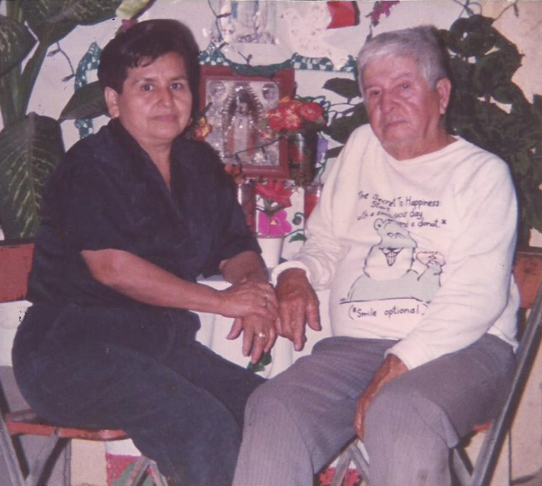
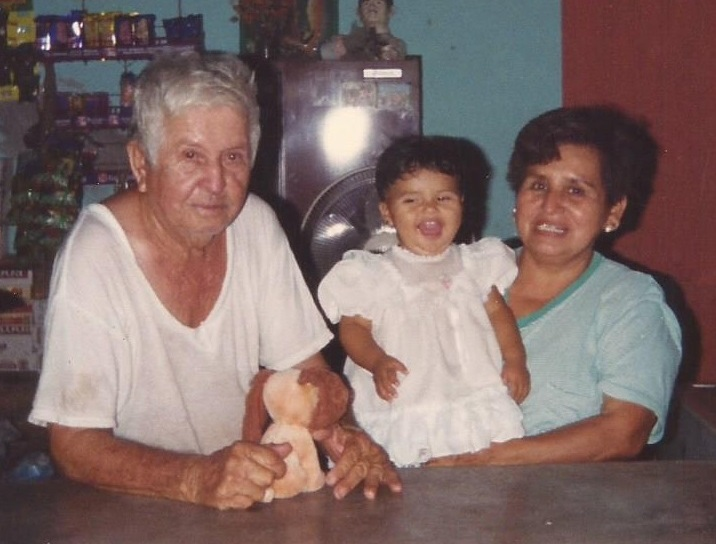
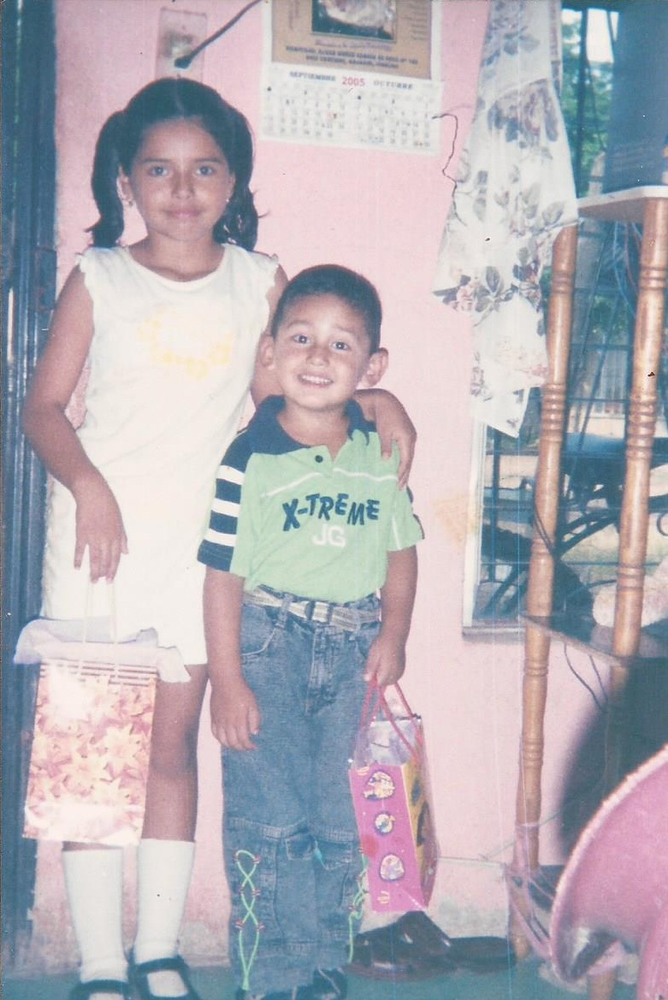

Mi familia esta con formada por cuatro personas, mi padre que se llama Sergio Rodriguez Losoya, mi madre que lleva por nombre Sabina Gamez Barraza,
mi hermano Sergio Jesús Gabriel Rodriguez Gamez y yo Saby Rosario Guadalupe Rodriguez Gamez. Mis padres se casaron el 7 de octubre de 1995.
Ellos se conocieron cuando trabajaban en un empaque que se llamaba San Javier, mi papá era encargado de cuartos fríos y mi mamá empacaba y rezagaba el
producto que llevaban a ese lugar. Duraron un año de novios y decidieron casarse mi mamá con 18 años de edad y mi papá con 24 años que ese día de la
boda los estaba cumpliendo años.
Mi padre es hijo de José Félix Rodriguez Mexia(+) y de María de Jesús Lozoya Gamez. Mi abuelo nació en la ciudad de Mazatlán
pero fue criado en la comunidad de Pueblo Yaqui que se encuentra en Obregón Sonora, él sabía hablar la lengua indígena de esa comunidad. Mi abuela es
nacida en Culiacán y vivía en el pueblo de El Carrizal antes de venir a vivir a Ruiz Cortines. Siempre he sido la nieta mís consentida por mis abuelos paternos.


Mi mamá es hija de Baldomero Gamez Osuna y Francisca Barraza Lugo. Mi abuelo nació y creció en un lugar llamado Los Palillos, Sinaloa de Leyva
donde nada más había dos casas y mi abuela nació en La Vainilla, Sinaloa de Leyva y creció en un rancho llamado Las Vigas en la sierra. Cuando mis abuelos se casaron
se fueron a vivir a Bacubirito Sinaloa de Leyva, que fue donde nació mi mamá.Cuando ya no hubo mucho trabajo en esa comunidad se vinieron a Ruiz Cortines
y es donde radican actualmente.
Los papás de mi abuela materna son originarios de Las Vigas y Los Palillos Sinaloa de Leyva. Sus nombre son Santos Barraza(+) y Petra Lugo.
Hoy solo vive mi bisabuela ya que mi bisabuelo falleció en 2011.
Mi hermano como ya lo mencione tiene por nombre Sergio Jesús Gabriel Rodriguez Gamez, actualmente tiene 14 años nació en junio de 2002,
él está estudiando tercer año de secundaria. Cuando llego a nuestras vidas nos alegro mucho, es un gran hermano.

Mi familia es muy unida, nos justa mucho salir a pasear, salir a comer, tener un día divertido juntos y sobre todo platicar
de como estuvo nuestro día. Nos justa mucho festejar nuestros cumpleaños y compartir muchos momentos juntos.